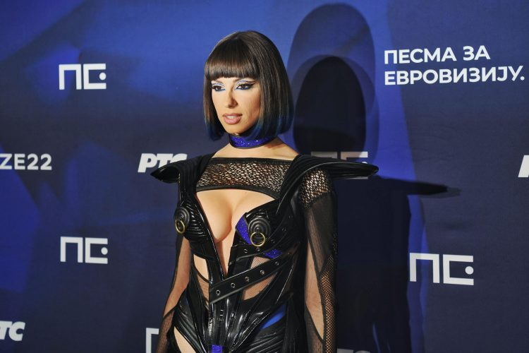

1 / 3

Caption Text
2 / 3

Caption Two
3 / 3

Caption Three
Dobro došli na moj sajt! Na ovom sajtu želim da pišem o pop muzici i o pevačima koje slušam svakodnevno.
Pop muzika je muzički žanr koji je nastao u 50-im godinama prošlog veka. Pop muzika je skraćenica od „popularna muzika“.
Pop muzika je jedan od najpopularnijih i najrasprostranjenijih muzičkih žanrova koji karakterišu zarazni ritmovi, jednostavne melodije i tekstovi koji su često fokusirani na teme ljubavi, svakodnevnog života i emocija.
Pop muzika se razvila sredinom 20. veka, iz žanrova kao što su rock 'n' roll, blues i country. Tokom godina, pop je postao globalni fenomen, integrirajući elemente raznih žanrova, uključujući elektroniku, R&B, hip hop i dance muziku. Ikone poput Michaela Jacksona, Madonne i Britney Spears obeležile su zlatno doba popa, dok savremeni izvođači kao što su Taylor Swift, Dua Lipa i The Weeknd nastavljaju da osvajaju publiku širom sveta.